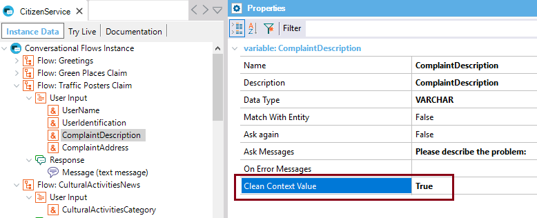

Clean the value given for this user input when the flow begins.
True -> Clean the context value for this user input when the flow begins, so it will be asked again to the user.
False -> Do not clean the context value for this user input when the flow begins. The value will be remembered / used from the value stored in the context. Description
In some cases, it's necessary to clear some Context User Input values, so the user can be asked to enter them again. So, we need that the chatbot forgets this information, and doesn't save it in the conversation context. Samples
That's not the case of User Identification; in general, we want the chatbot to remember it. In this case, the Clean Context value property should be set to FALSE. But consider the example shown in HowTo: Build a chatbot using GeneXus, where the user can make a claim about different topics (a lighting claim or a problem about a traffic sign). In both cases, the user is asked to enter the address and the description of the problem. This information should not be saved in the context, so when the user wants to make a new claim he/she is asked again to enter the address and a description of the problem.  To Apply the changes, just save the instance. AvailabilityThis property is available since GeneXus 15 upgrade 12. Scope Objects: Conversational Flows See Also
|
| Backlinks |
| Chatbot Context |
| Required property |